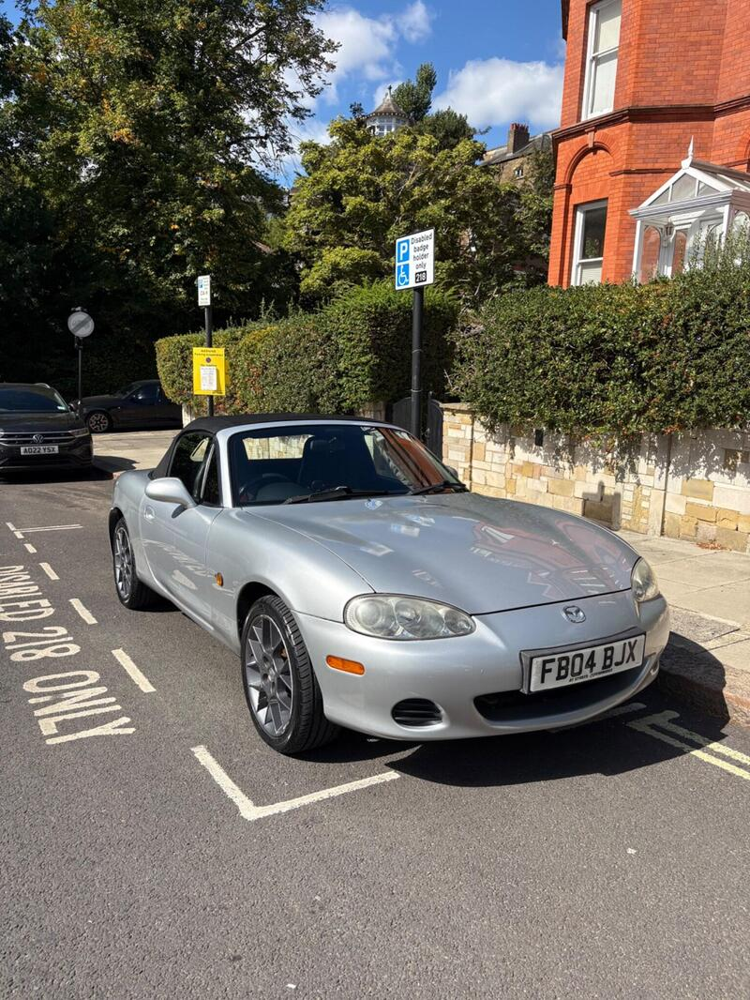
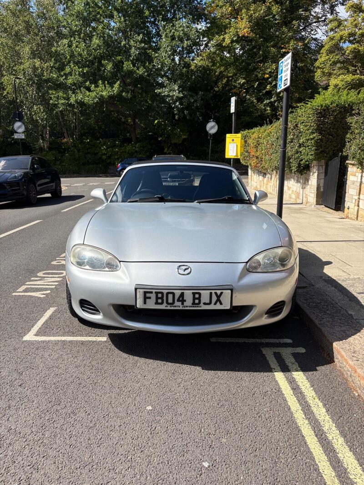
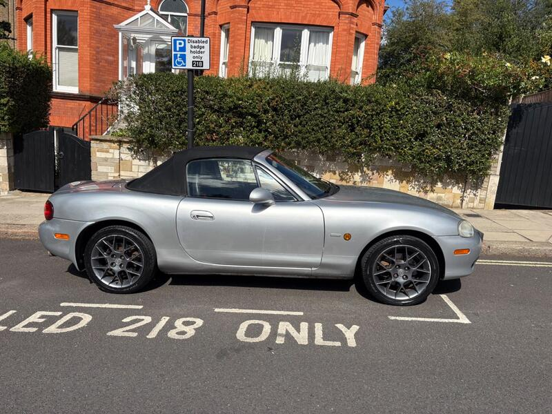
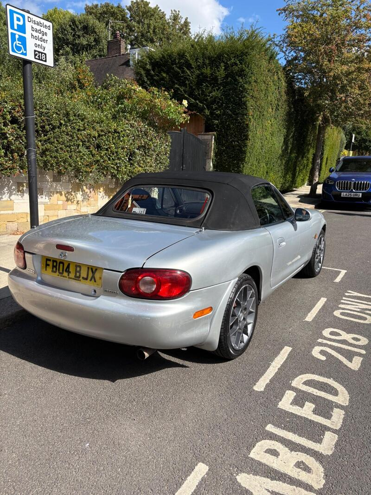

Seller photos from the AutoTrader ad.
2004 MX-5 1.8 Euphonic
A lot of car for £3,400 if the bodywork is sound.
Key facts
| Price | £3,400 |
|---|---|
| Year | 2004 |
| Miles | 65,199 |
| Variant | 1.8 Euphonic Limited Edition |
| Edition | Euphonic |
| Engine | 1.8 |
| Colour | Silver |
| Registration | 2004 (04 reg) |
| Owners | 10 owners |
| Seller | Private seller |
| Location | Maida Vale |
| From Poole | ~110 mi (estimate) |
| Source | AutoTrader, checked 12 Oct 2026 |
Why buy it
- Euphonic with a factory LSD (ad)
- Fresh MOT to Sep 2027 with 1 advisory (ad)
- Heated leather seats
Things to check
- 10 owners
10 owners
- No service history listed
No service history listed
- Mk2.5 weak spots
Sills, rear arches and chassis rails for rust, the hood seams, and when the cambelt was last changed.
Seller says (extract)
“Mazda MX5 NB MK 2.5 euphonic edition - Comes with a factory fitted limited slip differential (LSD). - ULEZ compliant which is rare for these modern classics - 5 speed manual transmission - Fresh MOT until Sep 2027 with only 1 advisory - Heated leather seats - Alpine CD + Bluetooth receiver with 6 disc CD changer in boot Rear sills were welded last year so they have plenty of life left on them. Low mileage for its age, fully functional soft top, everything is in working order. The car has been very well looked after, including indoor parking in the winter for rust protection. The oil was changed 2000 miles ago.…”